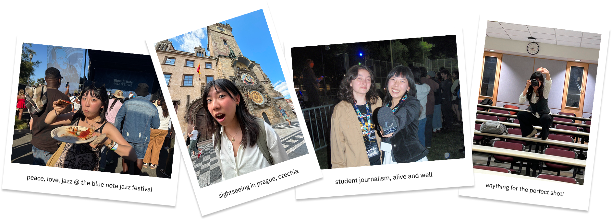

Having grown up in the 2000s, I can’t help but romanticize the early days of the internet as a vast frontier of quirky personal sites and unprecedented global connection. I love the way creatives took advantage of this medium to democratize knowledge and express ideas in new, interactive ways. This site is inspired by those early web design aesthetics, and is coded entirely by hand in HTML, CSS, and JavaScript by yours truly!
Please come by again if you’d like– I’ll be adding new projects and surprises to spark joy as I become better friends with the front end stack and grow as a designer-developer.
My Design Philosophy
Curiosity
From overheard conversations to machine learning diagrams, I'm looking for inspiration everywhere. I'm fascinated by the way art touches everything we do, and aim to center interdisciplinarity in my work– I'll never say no to an opportunity to pick up a new skill.
Culture
Creative works should be authentic to the people they're meant to serve. My creative process centers co-creation with my audience and users to create products that truly resonate. I'm an avid reader and aspiring polyglot, and I'm drawn to anything that brings me closer to my community.
Collaboration
Together we are greater than the sum of our parts. I've worked with developers, data analysts, musicians, physicians, and waste management specialists, and every lesson I take with me forward into my next project. My greatest talent is being able to communicate my process and insights to anyone.
off the clock...

Experience
Analyzed survey data of 350+ respondents on campus resource use patterns and needs using Qualtrics and R to identify key gaps in service and recommend resource expansion and outreach strategy.
Synthesized quantitative insights and data visualizations into digestible reports for a non-technical audience, informing student government in data-driven policy and budget decisions.
Designed and conducted task-based usability testing on a beta map application with 9 UX design students, uncovering issues with icon recognition and inconsistent design patterns to inform usability improvements.
Directed digital engagement strategy across program channels, driving a 65% increase in applications (386 → 635) over two admissions cycles through targeted campaigns and optimized content design.
Synthesized survey insights into storyboarding and creative direction for recruitment video campaign reaching 200+ students annually and supporting a 45% offer expansion.
Produced inclusive campaign content highlighting diverse student perspectives, strengthening program reputation and stakeholder trust by addressing equity and access concerns.
Directed a 4-person creative team to launch data-driven campaigns, growing cohort program applications by 80% in first recruitment cycle under my leadership.
Sustained triple-digit application volumes for the fellowship program (125+ applicants per cycle) through targeted outreach and brand engagement strategies.
Implemented feedback loops via interviews and surveys, translating insights into cross-platform design strategies across digital, print, and social.
Led a rebrand initiative aligning visual identity and messaging with organizational values, strengthening program positioning and stakeholder alignment.
Conducted evaluative testing of large language model outputs with a focus on bias, suppression, and ethical risks, developing stakeholder personas to capture diverse user experiences and concerns.
Mapped user journeys across 7 models and 6 social media platforms, identifying harmful content touchpoints to inform governance and safeguard recommendations.
Co-designed research workflows with an 8-member team, creating replicable testing protocols and usability-inspired evaluation methods to improve scalability.
Fostered a dynamic station culture by collaborating with the design team to produce a quarterly music and arts zine, enhancing community engagement.
Researched listening trends to develop compelling content and curate playlists for a weekly music show, increasing audience engagement.
Created podcast by interviewing station leaders and veteran DJs to highlight community impact of KDVS, submitted to 2024 NPR College Podcast Challenge
Collaborated on a community-loved fundraising video produced in just one week, contributing on-screen and behind the scenes with improvised ideas and creative input that reflected the team’s genuine passion
Accelerated delivery timelines by 25% by defining a structured 12-week project roadmap, enabling iterative testing and stakeholder-driven refinements.
Defined project phases and delegated work across a 6-person design team, ensuring deliverables aligned with client marketing objectives, agreed scope, and compressed timelines.
Served as primary point of contact between clients, designers, and developers, translating technical constraints into clear, actionable recommendations for non-technical stakeholders.
Mentored junior designers in UX and product development best practices, improving delivery efficiency by week four and increasing consistency and quality across final deliverables.
Conducted market and audience research to inform updates to an outdated corporate website, identifying opportunities to better align messaging with target customer needs.
Researched and evaluated digital marketing agencies based on relevant experience, branding alignment, and budget fit, coordinating introductory meetings with company leadership and communicating project scope and expectations.
Coordinated communication between vendors and commercial clients, gathering updates on service changes and proactively relaying clear, timely information to ensure aligned expectations.